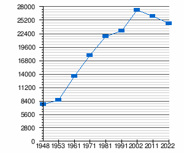
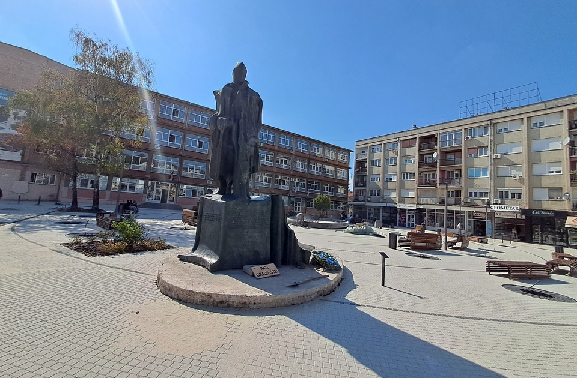

Многобројни културно-историјски споменици, од праисторије до новијег времена, сведоче о бурној прошлости овог подручја. Иако насељеност територије општине датира из праисторије, први писани подаци о самом насељу Инђија потичу из средине 20. века. Остаци римских и средњовековних утврђења и споменик Сланкаменачкој бици говоре о стратешком значају овог подручја уз Дунав, који је кроз историју представљао границу различитих империја. Урбано језгро Инђије потиче са краја 19. и почетка 20. века, из периода индустријског развоја и периода насељавања становника немачке националности, када настају зграда Општинске управе, кућа Војновића, Римокатоличка црква светог Петра, зграда Жупног двора и градске куће са уличним фасадама еклектички обликованим са елементима барока, класицизма, сецесије и неоренесансе. Нешто раније настаје црква Ваведења пресвете Богородице која по својим пропорцијама спада међу најлепше и најскладније грађевине у Срему сачуване из 18. века. Инђија, као центар једне од најразвијенијих и најуређенијих општина у земљи, захваљујући свом убрзаном развоју данас је прерасла у модерно уређену урбану средину. Својом новом пешачком зоном са монументалним тргом, модерном зградом Културног центра, цветним аранжманима и урбаним мобилијаром, Инђија гради имиџ европског града по мери савременог човека. Инђија поседује градски базен са теренима за одбојку и мали фудбал. Базен је отворен за посетиоце током летњих месеци.
 